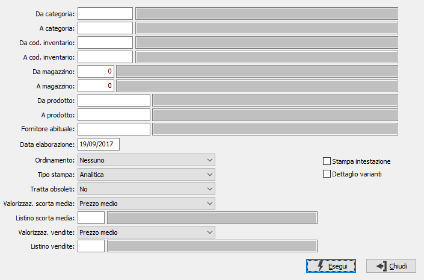

Indice di rotazione delle scorte
La procedura calcola l’indice di rotazione della scorta di ciascun articolo seguendo le seguenti regole:
calcolo della quantità e del valore del venduto
calcolo della scorta media (scorta ad inizio anno e alla fine di ogni mese) a quantità e a valore
calcolo dell’indice di rotazione come rapporto fra costo del venduto e costo della scorta media.

DA CATEGORIA: eventuale codice della categoria merceologica da cui si vuole iniziare la selezione di analisi. Sul campo è attiva la ricerca (F9) sulla tabella Categorie merceologiche.
A CATEGORIA: eventuale codice della categoria merceologica con cui si vuole concludere la selezione di analisi. Sul campo è attiva la ricerca (F9) sulla tabella Categorie merceologiche.
DA COD. INVENTARIO: eventuale codice Inventario da cui si vuole iniziare la selezione di analisi. Sul campo è attiva la ricerca (F9) sulla tabella Codici inventario.
A COD. INVENTARIO: eventuale codice Inventario con cui vi vuole concludere la selezione di analisi. Sul campo è attiva la ricerca (F9) sulla tabella Codici inventario.
DA MAGAZZINO: eventuale codice del magazzino da cui si vuole iniziare la selezione di analisi. Confermando a vuoto, l’analisi inizia dal primo magazzino valido. Sul campo è attiva la ricerca (F9) F9 sulla tabella Magazzini.
A MAGAZZINO: eventuale codice del magazzino con cui si vuole concludere la selezione di analisi. Confermando a vuoto, l’analisi termina con l’ultimo magazzino valido. Sul campo è attiva la ricerca (F9) sulla tabella Magazzini.
DA PRODOTTO: eventuale codice dell'articolo, presente in anagrafica Prodotti, da cui si desidera iniziare la selezione dei movimenti di magazzino. Confermando a vuoto, la selezione inizia con il primo prodotto valido. Sul campo è attiva la ricerca (F9) sull’anagrafica prodotti.
A PRODOTTO: eventuale codice dell'articolo, presente in anagrafica Prodotti, a cui si desidera terminare la selezione dei movimenti di magazzino. Confermando a vuoto, la selezione termina con l’ultimo valido. Sul campo è attiva la ricerca (F9) sull’anagrafica prodotti.
FORNITORE ABITUALE: eventuale codice del fornitore abituale dei prodotti con cui si desidera effettuare la selezione dei prodotti. Sul campo è attiva la ricerca (F9) sull’anagrafica fornitori.
DATA ELABORAZIONE: data in cui viene effettuata l'elaborazione; viene proposta la data di sistema ed il campo è obbligatorio.
ORDINAMENTO PER: combo box per definire i criteri di ordinamento. Valori ammessi: nessuno, crescente o decrescente.
TIPO STAMPA: definisce il tipo di stampa da effettuare: analitica (singolo prodotto), raggruppata per categoria, raggruppata per codice inventario.
TRATTA OBSOLETI: definisce come se includere nell'analisi anche gli articoli obsoleti: Si, No, Solo obsoleti.
VALORIZZAZIONE SCORTA MEDIA: definisce il metodo di valorizzazione della scorta media. Valori possibili:
Prezzo medio
Prezzo ultimo carico
Costo di mercato
Prezzo medio di vendita
Prezzo di listino
LISTINO SCORTA MEDIA: Indica il codice del listino, presente sulla tabella Listini, da utilizzare in caso di utilizzo della valorizzazione a prezzo di listino. Sul campo sono attive le funzioni di ricerca (F9).
VALORIZZAZIONE VENDITE: definisce il metodo di valorizzazione delle vendite. Valori possibili:
Prezzo medio
Prezzo ultimo carico
Costo di mercato
Prezzo medio di vendita
Prezzo di listino
LISTINO VENDITE: Indica il codice del listino, presente sulla tabella Listini, da utilizzare in caso di utilizzo della valorizzazione a prezzo di listino. Sul campo sono attive le funzioni di ricerca (F9).
STAMPA INTESTAZIONE: Indica se stampare una pagina con i criteri di selezione della stampa, l’operatore che l’ ha eseguita, la data e l’ora (casella con segno di spunta).
DETTAGLIO VARIANTE: definisce se effettuare la stampa dettagliata delle singole varianti (casella con segno di spunta).